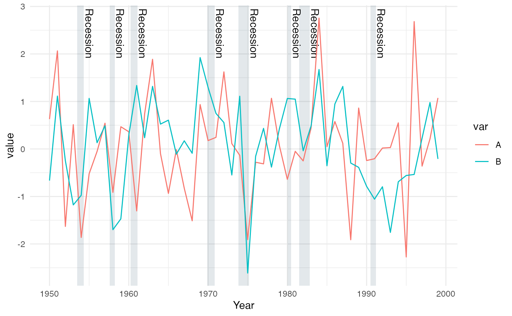

Add recessions to time series graphs
geom_recessions.Rdgeom_recessions returns one or two ggplot geoms that add rectangles
representing recessions to a plot. It will either return only rectangles or,
by default, both rectangles and text identifying each recession.
geom_recessions(xformat = "numeric", text = TRUE, label = " Recession", ymin = -Inf, ymax = Inf, fill = "#002d49", text_nudge_x = 0.2, text_nudge_y = 0, show.legend = FALSE, rect_aes = NULL, text_aes = NULL, ...)
Arguments
| xformat | Char, a string indicating whether the x axis of the primary
data being graphed is in integer or date format. This argument will
currently accept one of |
|---|---|
| text | Logical, whether or not to include labels that identify each box as a recession. |
| label | Char, the text to label each recession. Defaults to " Recession". (The space is a more consistent y axix buffer than text_nudge_y because it not relative to the scale of the y axis.) |
| ymin, ymax | Numeric, The height of the recession rectangles. Defaults to -Inf and +Inf. Override to the top and bottom gridlines to implement ideal CMAP design standards. |
| fill | Char, the fill color for the recession rectangles. Defaults to
|
| text_nudge_x, text_nudge_y | Numeric, the amount to shift the labels along each axis. Defaults to 0.2 and 0, respectively. Note that these use the x and y scales so will need to be adjusted depending on what is being graphed. |
| show.legend | Logical, whether to render the rectangles in the legend.
Defaults to |
| rect_aes, text_aes | Named list, additional aesthetics to send to the rectangle and text geoms, respectively. |
| ... | additional aesthetics to send to BOTH the rectangle and text geoms. |
Important notes
If show.legend = TRUE you must place any
categorical aesthetics (e.g. color, size) specific to the primary data in
the geom(s) used to display that data. Otherwise, the legend will inherit
aesthetics from geom_recessions.
It is best to place this object before your primary geom (likely
geom_line()) in your code, so that ggplot draws it behind the primary
data being drawn.
Default color
The CMAP color palette gray used for recessions is
#e3e8eb. The rectangle geom has default fill and alpha values of
#002d49 and 0.11 built into the function. These replicate the
palette color at the highest possible transparency. This is done because
there is no known way to place the recession geom behind the graph's grid
lines. The default therefore produces the approved CMAP color while altering
the appearance of any overlapping grid lines as little as possible. These
can be overridden, but separately. Override fill using the top-level
argument, as in fill = "red". Override alpha within rect_aes as in
rect_aes = list(alpha = 0.5). Color and alpha were calculated using
the hints found here:
https://stackoverflow.com/questions/6672374/convert-rgb-to-rgba-over-white.
Under the hood
This function calls two custom geoms, constructed
with ggproto. The custom GeomRecessions and GeomRecessionsText are modified
versions of GeomRect and GeomText, respectively. The only variations to each
occur in default_aes, required_aes, and setup_data
arguments. These variations allow the the primary dataframe (specified in
ggplot(data = XXX)) to filter the recessions displayed.
See also
https://ggplot2-book.org/extensions.html https://github.com/brodieG/ggbg/blob/development/inst/doc/extensions.html#stat-compute https://rpubs.com/hadley/97970 https://cran.r-project.org/web/packages/ggplot2/vignettes/extending-ggplot2.html
Examples
grp_goods <- dplyr::filter(grp_over_time, category == "Goods-Producing") grp_goods <- dplyr::mutate(grp_goods, year2 = as.Date(lubridate::date_decimal(year))) # INTEGER X AXIS: ggplot(grp_over_time, aes(x = year, y = realgrp, color = cluster)) + geom_recessions() + geom_line() + scale_x_continuous("Year") + theme_minimal()# DATE X AXIS: ggplot(data = grp_goods, mapping = aes(x = year2, y = realgrp, color = cluster)) + geom_recessions(xformat = "date") + geom_line() + scale_x_date("Year") + theme_minimal()# MODIFIED AESTHETICS: ggplot(grp_over_time, aes(x = year, y = realgrp)) + geom_recessions(show.legend = TRUE, fill = "blue", text = FALSE, rect_aes = list(alpha = 1, color = "red")) + geom_line(aes(color = cluster)) + scale_x_continuous("Year") + theme_minimal()# BELOW EXAMPLES SHOW MORE THAN 1 RECESSION df <- data.frame(year_dec=1950:1999, value=rnorm(100), var=c(rep("A", 50), rep("B", 50))) df$year_date <- as.Date(lubridate::date_decimal(df$year_dec)) # A plot with an integer-based x axis ggplot(df, mapping = aes(x = year_dec, y = value)) + geom_recessions() + geom_line(aes(color = var)) + scale_x_continuous("Year") + theme_minimal()# A plot with a date-based x axis ggplot(df, mapping = aes(x = year_date, y = value)) + geom_recessions(xformat = "date", show.legend = TRUE) + geom_line(aes(color = var)) + scale_x_date() + theme_minimal()